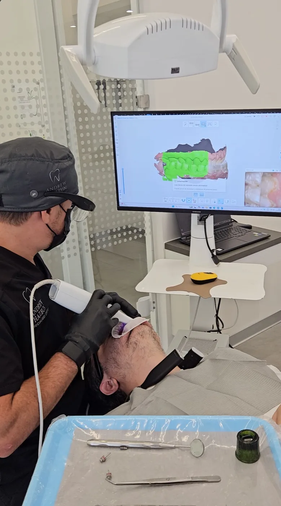

Brackets convencionales, brackets de autoligado y alineadores invisibles, para adolescentes y adultos, con diagnóstico digital dentro del centro.

La ortodoncia aplica fuerzas ligeras y sostenidas para llevar cada diente a su posición dentro de la arcada. Corrige apiñamiento, espacios, piezas giradas y, sobre todo, la forma en que ambas arcadas encajan al morder.
Lo estético es lo primero que se nota, pero no es la única razón para tratarse. Una mordida desalineada puede repartir de forma desigual las fuerzas de la masticación, y con el tiempo algunas piezas llegan a desgastarse antes.
Los dientes apiñados dejan zonas que el cepillo y el hilo no alcanzan, y ahí se acumula placa. Esa placa retenida es la que con el tiempo da lugar a caries y a problemas de encías.
El centro trabaja con brackets convencionales, de autoligado y alineadores invisibles. Persiguen el mismo objetivo y se diferencian en el mecanismo, aunque no todos están indicados en todos los casos.
Un bracket adherido a cada diente y un arco sujeto con ligaduras que el ortodoncista renueva en cada control. Es el sistema de uso más prolongado en la práctica ortodóncica y permite abordar una amplia variedad de movimientos, según lo que muestre el diagnóstico.
Una tapa o clip integrado en el propio bracket retiene el arco, sin ligadura elástica. Esa diferencia cambia el modo de trabajo en cada control. Si conviene en su caso se valora en la consulta.
Férulas transparentes hechas a la medida que se cambian por series, cada una con un movimiento planificado. Se retiran para comer y para cepillarse, y dependen de que se usen las horas indicadas.
La elección se hace después de estudiar la boca. En la consulta de valoración se revisa clínicamente, se toman los registros necesarios y se pondera:
El centro dispone de radiología 3D propia y escáner intraoral, así que el estudio se completa aquí mismo. El Dr. John Andrew Hazbun Legrand integra a profesionales de ortodoncia según el caso: conozca su trayectoria o vea todos los tratamientos.

Mientras el hueso que rodea la raíz siga respondiendo, el movimiento es posible. Lo que cambia en el adulto no es la posibilidad, sino el contexto.
En un adolescente los maxilares aún crecen y ese crecimiento se puede guiar. En un adulto los maxilares ya terminaron de crecer, de modo que la ortodoncia trabaja sobre la posición de los dientes y por lo general avanza de forma más pausada. Cuando la discrepancia no es solo dentaria, el alcance del tratamiento se valora en la consulta. Es frecuente además que llegue con encías retraídas, coronas o alguna pieza perdida, y todo eso se toma en cuenta al planificar.
A veces la ortodoncia prepara la boca para otro tratamiento, porque abre el espacio correcto antes de colocar un implante dental o de plantear un diseño de sonrisa.

Planificar una ortodoncia exige una copia fiel de ambas arcadas. Durante décadas eso significó una cubeta con pasta de impresión dentro de la boca y un modelo de yeso que había que vaciar y almacenar.
El escáner intraoral sustituye ese paso. Una cámara del tamaño de un lápiz grueso recorre los dientes y levanta un modelo tridimensional en pantalla. No hay pasta ni sabor, y si una zona queda incompleta se repasa solo esa zona.
El archivo resultante sirve para estudiar los movimientos, para fabricar los alineadores cuando ese es el sistema elegido y para conservar el punto de partida con el que se compara la evolución.
El bracket crea rincones nuevos donde se retiene placa, y alrededor de ellos el esmalte puede desmineralizarse. Cepillarse después de cada comida pasa a formar parte del tratamiento. Ayudan el cepillo interproximal, el hilo específico para pasar por debajo del arco y el irrigador como complemento, nunca como sustituto.
Con alineadores el cepillado es más sencillo porque las férulas se retiran, aunque con ellas puestas solo se toma agua.
Al retirar el aparato, el hueso y las fibras que rodean cada raíz siguen adaptándose y tienden a llevar las piezas hacia donde estaban, un regreso que se conoce como recidiva.
Para limitar ese movimiento se emplea un retenedor fijo, un alambre adherido por detrás de los dientes anteriores, uno removible transparente que suele usarse de noche, o ambos. Cuánto tiempo usarlo lo indica el ortodoncista que lleve su caso y se ajusta en los controles.
Varía según el caso. Influyen el movimiento que hay que lograr, la edad, la respuesta de cada persona y, con alineadores, las horas de uso diarias. El plan previsto se le explica en la consulta de valoración.
Depende del sistema que se indique y de la duración que estime el diagnóstico, que no se conocen antes del estudio. El costo de su caso se le explica en la consulta de valoración.
La colocación en sí no suele describirse como dolorosa, aunque la experiencia varía de una persona a otra. Lo habitual es sentir presión y sensibilidad al masticar los primeros días y después de cada ajuste, mientras el diente se mueve. Si el aparato roza la mejilla se utiliza cera de ortodoncia.
En ambos hay un bracket en cada diente y un arco que los recorre. El convencional sujeta ese arco con una ligadura que se cambia en cada cita. El de autoligado lo retiene con una tapa o clip propio, sin ligadura elástica.
No para todos. Resuelven bien muchas situaciones, aunque hay movimientos en los que un aparato fijo ofrece un control más directo, y dependen de que se usen las horas indicadas cada día. Saberlo requiere un diagnóstico previo.
Sí. No existe una edad a partir de la cual deje de ser posible mover los dientes, siempre que el hueso y las encías lo permitan, algo que se comprueba en la evaluación previa. En el adulto se revisa antes el estado de la encía y de las restauraciones existentes.
Sí. Al retirar el aparato los tejidos que rodean cada raíz siguen adaptándose y los dientes tienden a regresar. El retenedor, fijo o removible, limita ese movimiento, y el ortodoncista que lleve su caso indica el esquema de uso.
Las dudas que no aparezcan aquí se resuelven en la consulta de valoración.
Escríbanos por WhatsApp y con gusto le orientamos sobre el tratamiento ideal para usted.
Lunes a viernes de 9:00 a.m. a 6:00 p.m. Sábados con cita previa. Design Center, Torre 1, Nivel 9, Oficina 909, Zona 10.